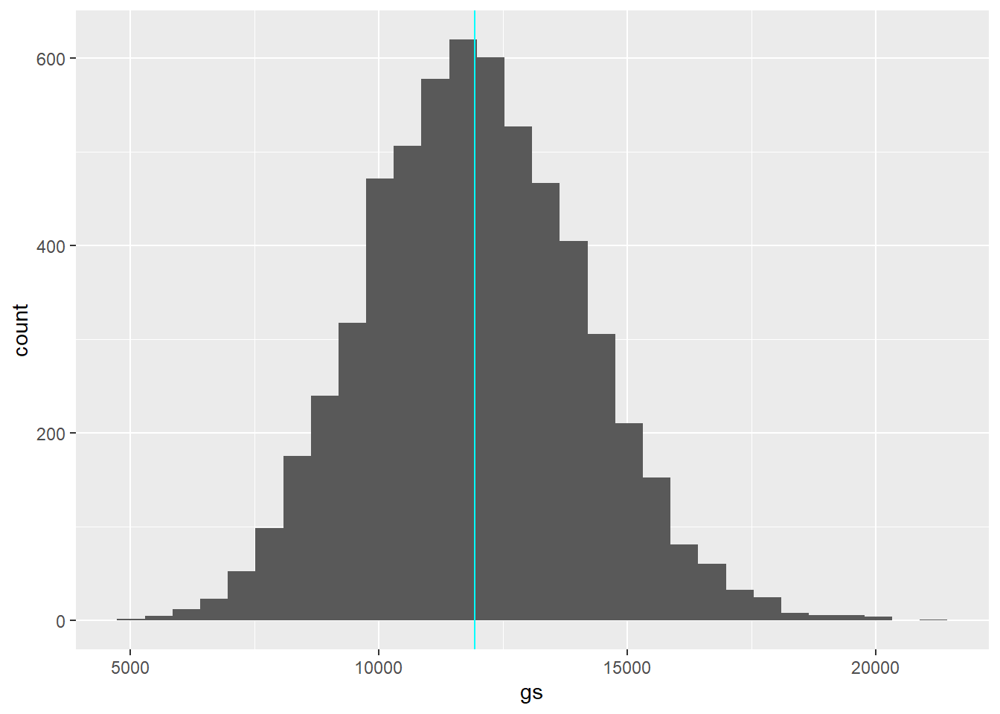
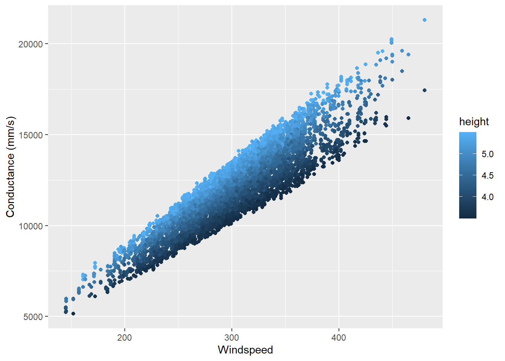
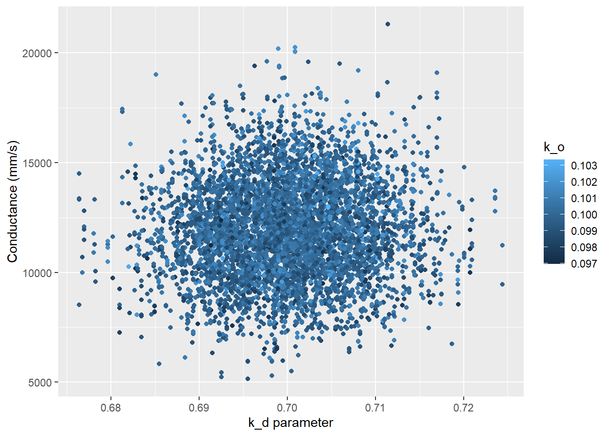
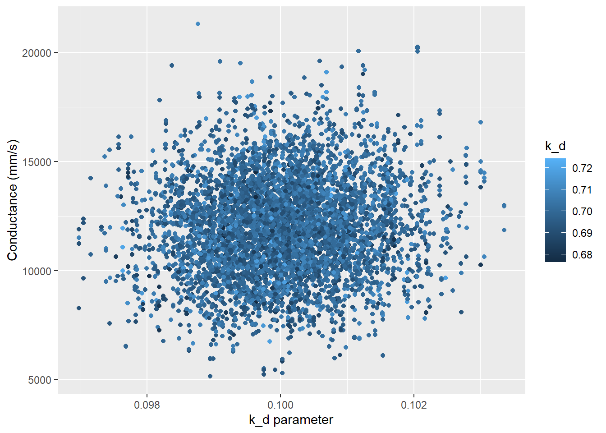

library(sensitivity)
library(tidyverse)
library(gridExtra)
library(purrr)
library(ggpubr)
library(here)Assignment 4: Sobol Analysis
Goal
The goal of this assignment is to repeat the Sobol analysis we did in class, but we are assuming a different location with substantially higher wind speeds and shorter vegetation.
Load Libraries
Generate new parameter values
- Use the Sobol approach to generate parameter values for the 4 parameters
Parameters:
Windspeed v is normally distributed with a mean of 300 cm/s and std dev. 50 cm/s
Vegetation height is uniformly distributed between 3.5 and 5.5 m
kd and k0 are normally distribtued with std. dev. of 1% of their defaults
source(here("R/Catm.R"))
# generate two examples of random number from parameter distributions
np <- 1000
k_o <- rnorm(mean = 0.1, sd = 0.1 * 0.01, n = np)
k_d <- rnorm(mean = 0.7, sd = 0.7 * 0.01, n = np)
v <- rnorm(mean = 300, sd = 50, n = np)
height <- runif(min = 3.5, max = 5.5, n = np)
X1 <- cbind.data.frame(k_o, k_d, v, height = height)
# repeat sampling
k_o <- rnorm(mean = 0.1, sd = 0.1 * 0.01, n = np)
k_d <- rnorm(mean = 0.7, sd = 0.7 * 0.01, n = np)
v <- rnorm(mean = 300, sd = 50, n = np)
height <- runif(min = 3.5, max = 5.5, n = np)
X2 <- cbind.data.frame(k_o, k_d, v, height = height)
# there are different versions of sobol functions that have different approaches for estimating parameters and indices, we use an approach implemented by jansen
sens_Catm_Sobol <- sobolSalt(model = NULL, X1, X2, nboot = 100)
# Take a look at the Sobol generated sensitivity object
# your parameters sets for sensitivity analysis are in XRun the atmosphereric conductance model
- Run the atmospheric conductance model for these parameters Now that we have generated the parameter values, let’s run our sensitivity model using the
sensitivitylibrary.
# run model for all parameter sets
# make sure you give the parameters names
parms <- as.data.frame(sens_Catm_Sobol$X)
colnames(parms) <- colnames(X1)
res <- pmap_dbl(parms, Catm)
sens_Catm_Sobol <- sensitivity::tell(sens_Catm_Sobol, res, res.names = "ga")
# main effect: partitions variance (main effect without co-variance) - sums approximately to one
sens_Catm_Sobol$S original bias std. error min. c.i. max. c.i.
X1 0.02791272 -0.0007596355 0.03013612 -0.02431027 0.09316625
X2 0.02487061 -0.0014279274 0.02968367 -0.02562485 0.08807871
X3 0.81517744 -0.0011795877 0.01050189 0.79382399 0.83919158
X4 0.17490163 -0.0024361674 0.02749273 0.12539997 0.23901994# useful to add names
row.names(sens_Catm_Sobol$S) <- colnames(parms)
sens_Catm_Sobol$S original bias std. error min. c.i. max. c.i.
k_o 0.02791272 -0.0007596355 0.03013612 -0.02431027 0.09316625
k_d 0.02487061 -0.0014279274 0.02968367 -0.02562485 0.08807871
v 0.81517744 -0.0011795877 0.01050189 0.79382399 0.83919158
height 0.17490163 -0.0024361674 0.02749273 0.12539997 0.23901994# total effect - accounts for parameter interactions
row.names(sens_Catm_Sobol$T) <- colnames(parms)
sens_Catm_Sobol$T original bias std. error min. c.i. max. c.i.
k_o 0.002826594 1.989595e-05 0.0002049625 0.002440223 0.003212089
k_d 0.002957251 5.274121e-06 0.0002049964 0.002445330 0.003366300
v 0.787584935 1.139595e-03 0.0304941713 0.723942072 0.840535500
height 0.180103983 6.889266e-04 0.0104849746 0.156479274 0.201343163# Both the main effect and total effect can tell us something about how the parameter influences results
print(sens_Catm_Sobol)
Call:
sobolSalt(model = NULL, X1 = X1, X2 = X2, nboot = 100)
Model runs: 6000
Model variance: 4642435
First order indices:
original bias std. error min. c.i. max. c.i.
k_o 0.02791272 -0.0007596355 0.03013612 -0.02431027 0.09316625
k_d 0.02487061 -0.0014279274 0.02968367 -0.02562485 0.08807871
v 0.81517744 -0.0011795877 0.01050189 0.79382399 0.83919158
height 0.17490163 -0.0024361674 0.02749273 0.12539997 0.23901994
Total indices:
original bias std. error min. c.i. max. c.i.
k_o 0.002826594 1.989595e-05 0.0002049625 0.002440223 0.003212089
k_d 0.002957251 5.274121e-06 0.0002049964 0.002445330 0.003366300
v 0.787584935 1.139595e-03 0.0304941713 0.723942072 0.840535500
height 0.180103983 6.889266e-04 0.0104849746 0.156479274 0.201343163- Estimate the Sobol Indices for your output From the outputs, we see that windspeed and height have more influence on conductance. Let’s plot so we can visually see this.
Plot the estimates in a way that accounts for parameter uncertainty
- Plot conductance estimates against windspeed use the parameter that is 2nd in terms of total effect on response. From the table we created, windspeed (v) is the dominant variable affecting the model and height is the second most influential variable.
# graph two most sensitive parameters
both <- cbind.data.frame(parms, gs = sens_Catm_Sobol$y)
# look at overall gs sensitvity to uncertainty
ggplot(both, aes(x = gs)) +
geom_histogram() +
geom_vline(xintercept = mean(both$gs), col = "cyan")
# look at response of conductance to the two interesting variables
ggplot(both, aes(v, gs, col = height)) +
geom_point() +
labs(y = "Conductance (mm/s)", x = "Windspeed")
# look at response of conductance to the two most important variables
ggplot(both, aes(k_d, gs, col = k_o)) +
geom_point() +
labs(y = "Conductance (mm/s)", x = "k_d parameter")
# use second most sensitive parameter (using most important as color)
ggplot(both, aes(k_o, gs, col = k_d)) +
geom_point() +
labs(y = "Conductance (mm/s)", x = "k_d parameter")
Conclusion
Comment on what this tells you about how atmospheric conductance and its sensitivity to variation in windspped differs in this setting as compared to the setting that we examined in class where windspeed was lower and less variable and vegetation was taller.
With this model, where the height of the vegetation is much lower and the windspeed values and spread are greater, we see a much greater influence of the two parameters on atmospheric conductance. Windspeed has the most influence on atmospheric conductance, with height as a secondary influence. The two of these variables make up a linear relationship with conductance under the defined parameter values.